9. Reporting - Datamart
Pre používanie funkcie Datamart (reporting), ktorá umožňuje prácu s údajmi v ISPO, potrebujeme mať priradenú pracovnú pozíciu Spracovateľ dát alebo Monitorovací manažér VIR. Na základe týchto oprávnení môžeme sledovať a exportovať monitorovacie údaje odvíjajúce sa od programovej štruktúry. Reporting generuje systémové dáta a kopíruje zoznamy a zber údajov podľa Prílohy SIPOO č. 5.1 - 2 Vzor monitorovacích údajov.
Po pridaní pracovnej pozície Spracovateľ dát alebo Monitorovací manažér VIR klikneme na záložku Reporting VIR. Následne sa zobrazia nasledujúce záložky:
-
Priame vyzvania MU -> Zoznam priamych vyzvaní (monitorovacie údaje)
-
Prijímateľ MU -> Zoznam prijímateľov (monitorovacie údaje)
-
Výzva MU -> Zoznam výziev (monitorovacie údaje)
-
ŽoP MU -> Zoznam ŽoP (monitorovacie údaje)
-
ŽoPPM MU -> Zoznam ŽoPPM (monitorovacie údaje)
-
OD Projekt: aktivity
-
OD Projekt: zákl. dáta
-
OD Projekt: lokality
-
OD Projekt: ukazovatele
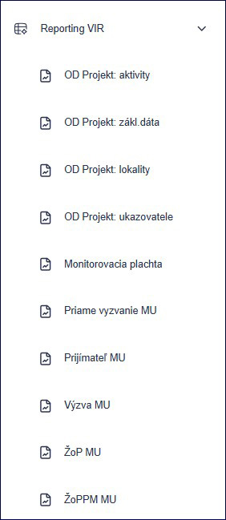
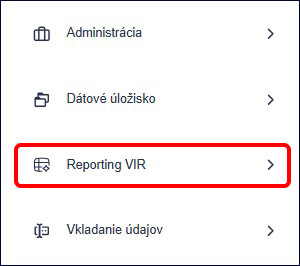
9.1) Zobrazenie dát
9.1.1) Klikneme na záložku Výzva MU. Zobrazí sa zoznam všetkých výziev priradených na orgán, pod ktorým pracujeme.
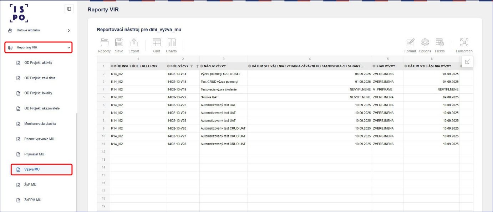
9.1.2) Kliknutím na šípku v konkrétnom stĺpci, napríklad v stĺpci Kód výzvy, môžeme zoradiť riadky podľa poradia.
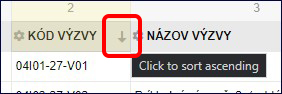
Kliknutím na názov konkrétneho stĺpca, napríklad stĺpca Kód výzvy, môžeme filtrovať, ktoré výzvy chceme v tabuľke zobraziť. Klikneme na názov stĺpca a vo filtri odklikneme zaškrtávacie políčko pri údajoch, ktoré nechceme zobraziť. Potvrdíme kliknutím na tlačidlo Apply.
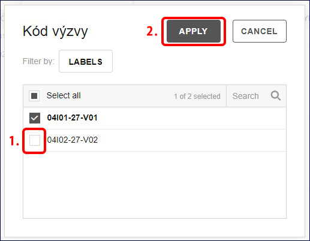
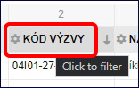
9.1.3) V prípade, že chceme zobrazovať iné poradie stĺpcov alebo niektoré stĺpce nezobrazovať, klikneme na znak šípky v pravom hornom rohu tabuľky.
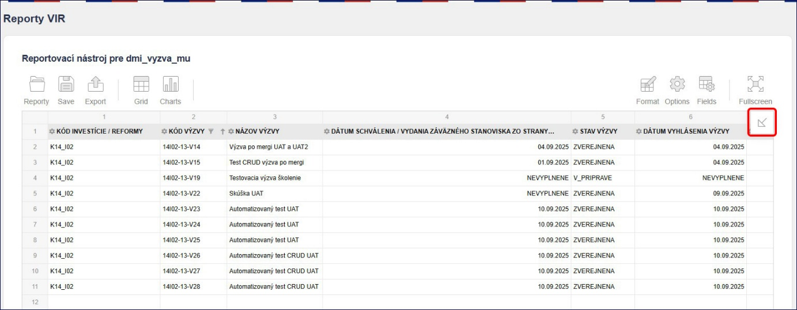
Odklikneme zaškrtávacie políčko údajov, ktoré nechceme zobraziť. Podržaním ľavého tlačidla myši na názve dokážeme presunúť názov stĺpca na poradie aké potrebujeme. Následne potvrdíme kliknutím na tlačidlo Apply.
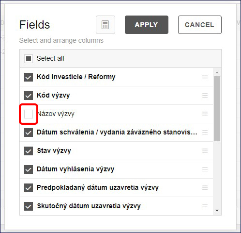
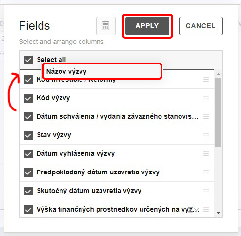
9.1.4) Kliknutím na tlačidlo Fullscreen môžeme report zobraziť na celú obrazovku.
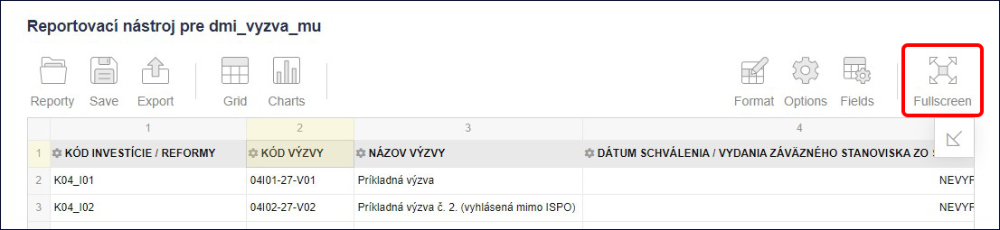
9.1.5) Takto nastavený report môžeme uložiť pomocou tlačidla Save, aby sme ho do budúcna nemuseli nastavovať znova. Ako názov ukladaného reportu odporúčame uviesť skratku vykonávateľa a názov toho, čo reportujeme. Napríklad PM-SR Interný report. Potvrdíme kliknutím na tlačidlo Uložiť.
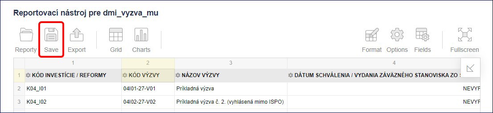
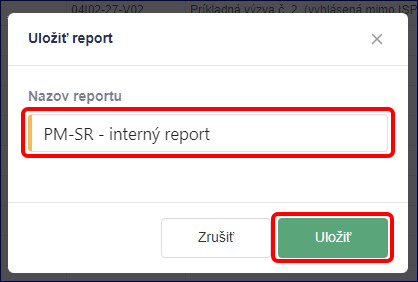
Takto uložený report nájdeme v zozname reportov.
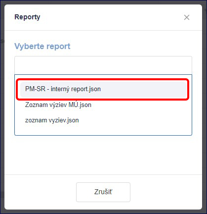
9.1.6) Kliknutím na tlačidlo Export môžeme report exportovať do rôznych súborov alebo vytlačiť.
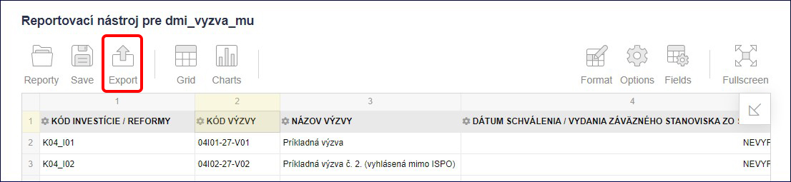
9.1.7) Datamart obsahuje aj ďalšie funkcie ako tvorenie rôznych grafov, či iné zobrazovanie dát. Takéto funkcionality môžeme pozrieť v originálnom manuáli pre aplikáciu Flexmonster na stránke https://www.flexmonster.com/doc/admin-panel-guide/ alebo na youtube kanáli https://www.youtube.com/@FlexMonsterPivot .